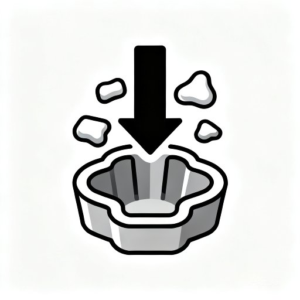
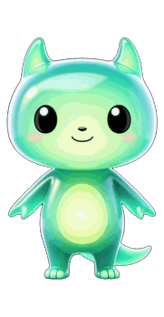
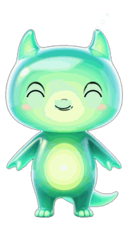
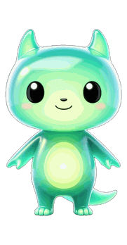
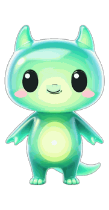
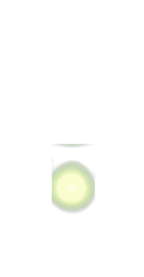

word_core_image 现有 41681 条核心意象记录，其中已生成图片的 8706 条（全库 79474 词的约 11%），有核心意象文字但还没出图的 32975 条。design/ui/img/core_images/core_11564_conform.jpeg（生产库真实词核心图，词条 conform「同模成形」，释义取自其 topology_json）。design/ui/img/pet/ 下的三层素材副本，原件是 App 现有的 app/assets/images/pet/（身体层 + 表情层 + 光核层），没有新画任何图。design/ui/ 目录（渲染时 HTML 被复制到 /tmp 再打开，../ 跨上级的 file:// 资源一律加载失败），所以 App 素材必须复制副本进 design/ui/img/；App 里的守护兽素材更新后，副本要跟着复制一次。